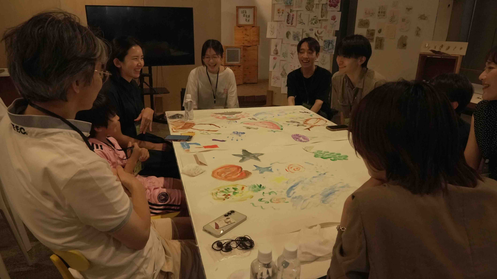
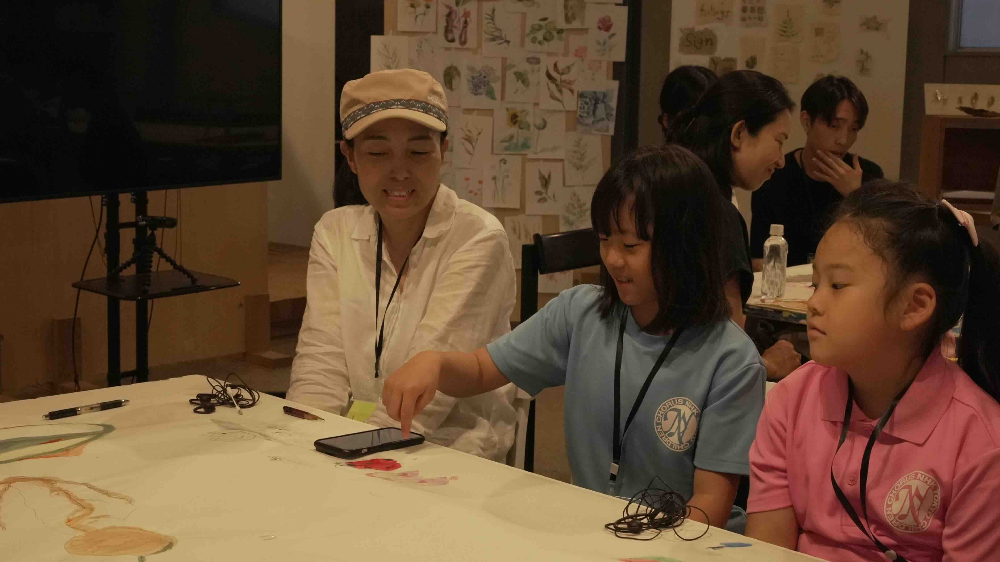
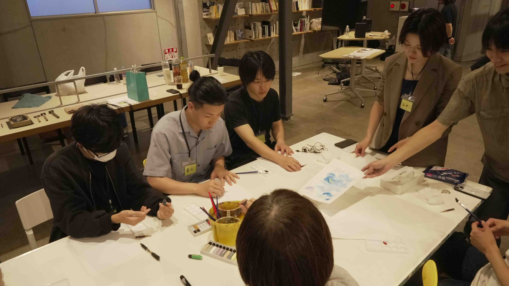
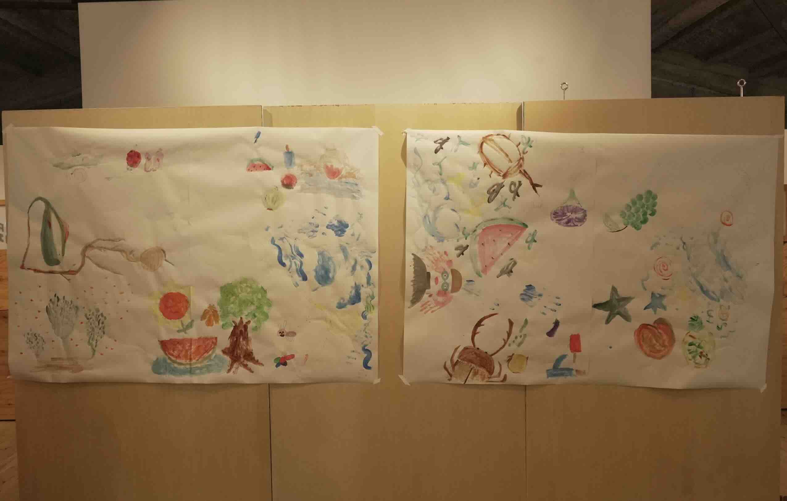
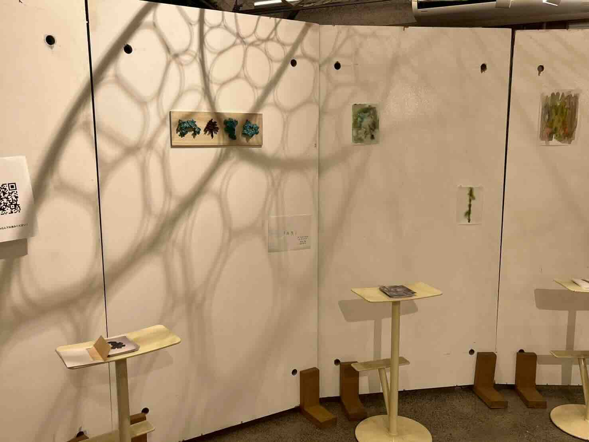
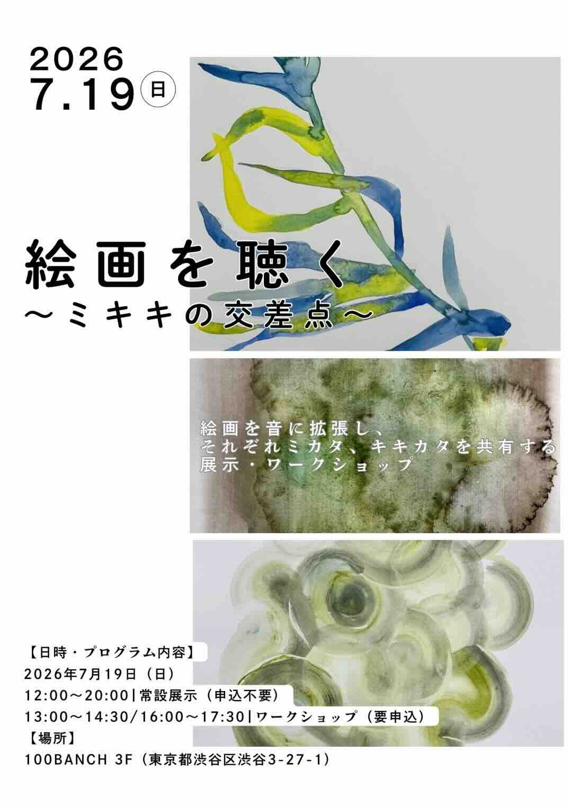

Work — 2026
ミキキの交差点

背景・問い
Background「絵画を聴く」では、絵という主観的なメディアを音に拡張してきた。この視点を、生き物では ないが確かに存在する「地衣類（共生体）」の気配や、鑑賞ではなく制作そのものの過程に向けたら どうなるか、という問いから、金工作家・長谷川純暖との共同企画として生まれた2つの実践である。
素材も手法も異なる2人が、それぞれの制作領域（金工とサウンド）を持ち寄り、同じ会場・ 同じ日に発表した。
気配に触れる
Installation金工作家・長谷川純暖との共同制作で、地衣類（共生体）の「気配」をテーマにしたサウンド・ インスタレーション。AR技術と空間音響を組み合わせ、その場では目に見えない存在の気配を、 音と映像を通じて感じ取れるようにした。
視覚的な要素と聴覚的な要素を同じ空間に重ねることで、地衣類のような、目立たないが 確かにそこにある存在のあり方を体感できるようにしている。
使用機材
AR技術、空間音響システム（要確認：機材の型番・システム構成）
ミキキの交差点
Workshop「描くこと（ドローイング）」と「聴くこと（作曲）」を交差させる実験的ワークショップ。 参加者は独自に開発したWebアプリを使い、絵から立ち上がるイメージをその場で音として配置し、 リアルタイムに作曲していく。
配置した音は参加者どうしの端末にも共有され、同じ一枚の絵に対する複数の解釈が重なって 聴こえる仕組みにした。この仕組みは、その後の「線を聴く」における即興的な音づくりにも つながっている。
使用機材
独自Webアプリ（音の選択・配置・共同編集）（要確認：実装環境・使用言語）
写真
Photos



